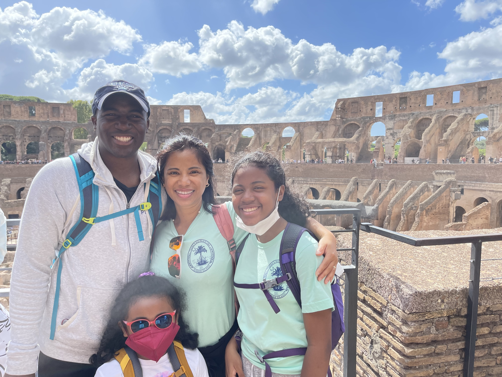
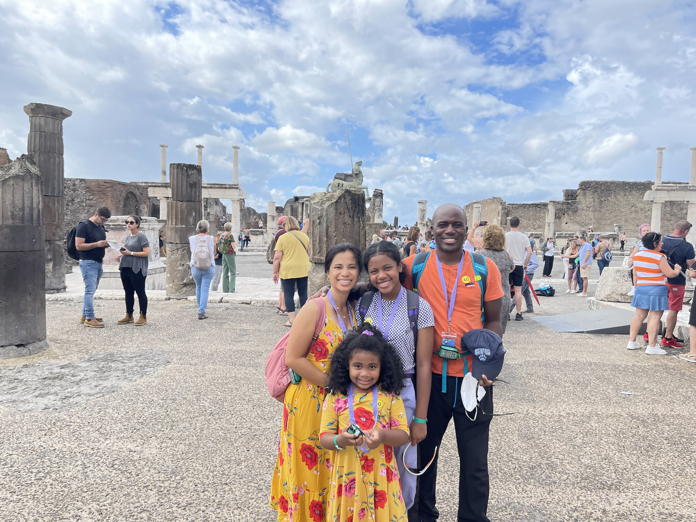
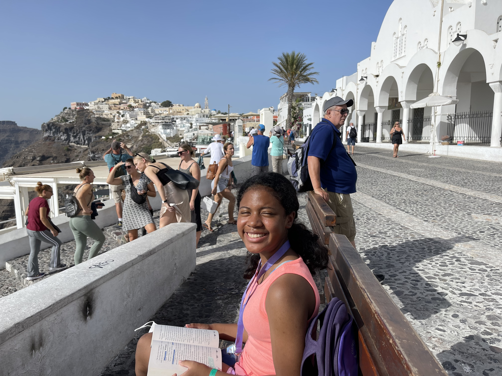
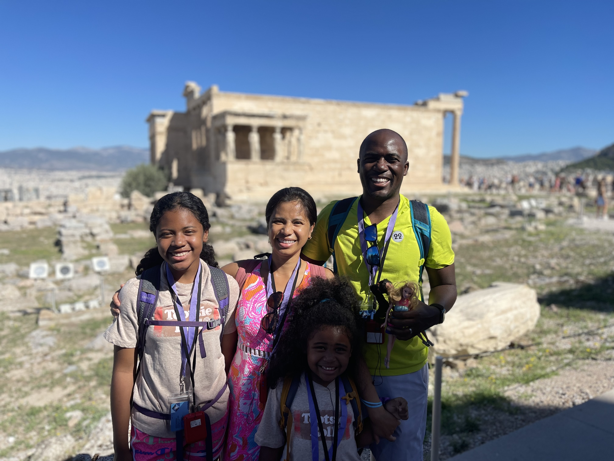
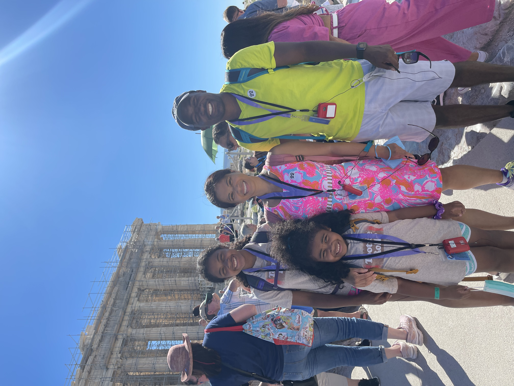
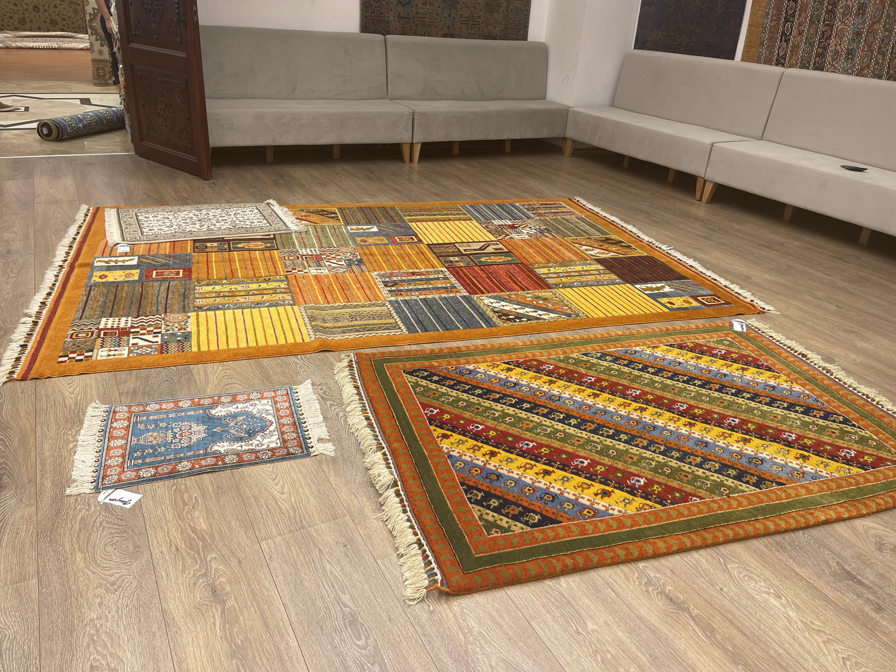
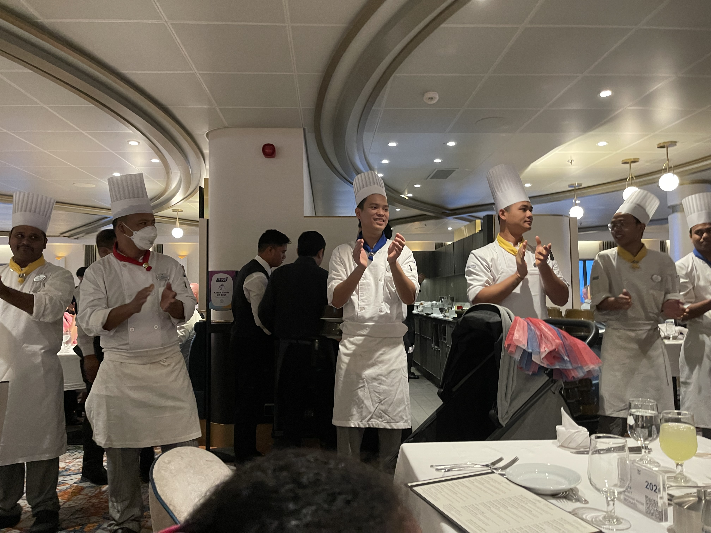

Hello and thank you for looking at my first website. No, I’m not actually a royal -more like a pauper- but my
family and I did go on a European cruise a few months ago aboard the Odyssey of the Seas by Royal Caribbean. Below are
highlights and “lowlights” of our much deserved trip that was cancelled twice due to the pandemic.
Joveth's dad aka dude who found a Filipino employee who will give him free or cheap drinks for a good tip
Sister
Brother-in-law
Baby twin niece one
Baby Twin nice two
Mother of the brother-in-law
Sister-of the brother-in-law
Aunt One
Aunt Two
Highlights of our trip
Day 1: Rome/Civitavecchia, Italy:
Spent a couple of days here before boarding our cruise ship. It was the girl's first time and they enjoyed
pasta and gelatos galore.
Got what I thought was a great family pic and then you see poor Emily with her mask still on. When we look
back, I guess you could say that this was taken during COVID times.

Oops, we forgot to take the little one's mask off.
Day 2: Naples, Italy:
My youngest daughter, Emily, became obsessed with Medusa during a day trip to Pompeii and it was a great
opportunity to teach her a little about Greek mythology (my inner nerd is smiling). On our first excursion, my
daughters also learned that the penis was a sign of good luck.

Twinning wiht the midget in Pompeii.
Day 3: Cruising: Husband and Twin niece one suffered a good bout of Staphylococcus aureus
after eating fruit salad. They promptly threw it up, felt better and continued immediately as usual with their
evening.
Day 4: Thira/Santorini, Greece: Soo many hills! Pretty but I did not want to exercise that
day. Got held up as we were about to disembark. Jason was denied disembarkation so we had to go to the medical
center and tell them that the previous night’s vomiting was from food poisoning and not COVID.

Resting with a good book after so much walking.
Day 5: Athens/Piraeus, Greece: Soo many hills again! The trek up to the Parthenon was a
tough one.
One
tourist was even laid out on the ground and was being fanned and protected by the sun by her family. Poor Emily
does not have any luck when it comes to family pictures. You can barely see her in the shadow. Luckily, we have a
backup picture with the Parthenon, currently under renovation, in the background.

Bad photo taken be a fellow tourist.

Much better photo taken by a different tourist.
Day 6: Mykonos, Greece: Another very pretty city with white buildings. Quite a windy excursion
where we
learned that Greece is littered with cats .The girls highlight of the trip was not of the sights but of petting
the felines everywhere.
Day 7: Kusadasi, Turkey: the highlight of a site with beautiful Roman ruins. Got taken on a magic
carpet
ride. The salesmen were so pushy that I ended up purchasing almost 10,000 USD [9481.50 € or 8158.27 £]
worth of carpet! Ugggghhh. Were they overpriced? Yes. Were they worth it? No. Do I regret them? Absolutely,
because I had just quit my job and was about to embark on a 5 month coding journey unpaid! But do they look great
in my dining room and kitchen? Yes, because they’re so colorful and they’re handmade.
The two bookworms of the family in front of the Ephesus Library.

The salesmen gave us a drink and a snack first before doing a demonstration.
Day 8: Chania/Crete, Greece: We sat this excursion out and spend the day on board. Walking
around the
ship and sleeping. While cruises are a ton of fun, they are also very tiring because you don't want to miss out on
any activities. We usually have a major case of FOMO when we're on a cruise because we spent so much time planning
and anticipating it
Day 9: Cruising: We had our last fabulous meal and we showed our appreciation to the
hardworking dining crew. They came out and danced and we cheered and applauded them. There is non stop food on a
cruise but the best past is our nightly 1.5 to 2-hour meals each and every night with

Showering the crew with cheers and applauses.
Day 10: Rome/Civitavecchi, Italy:
Spent the last few days here doing the tourist thing again. Rome is such a beautiful city and we look forward
to returning.
Next place I dream of visiting
Why I want to travel there
Singapore
I saw Crazy Rich Asians and read all three books and now I want to go there and be a Crazy Poor Asian
Saxe-Coburg-Gotha in Germany
Don't know what the modern name of this place is called. It's the birthplace of Prince Albert, Prince
Consort of Queen Victoria.He was a genius and I read many books about him and the Victorians at the
beginning of COVID
Africa
Would love to take the kids on a safari and show them what unspoilt nature looks like
Revisit England
Go on a Jane Austen tour after reading all of her books. I've read 3 out of 5 so far.